中华传统技艺：指尖传承的千年匠心
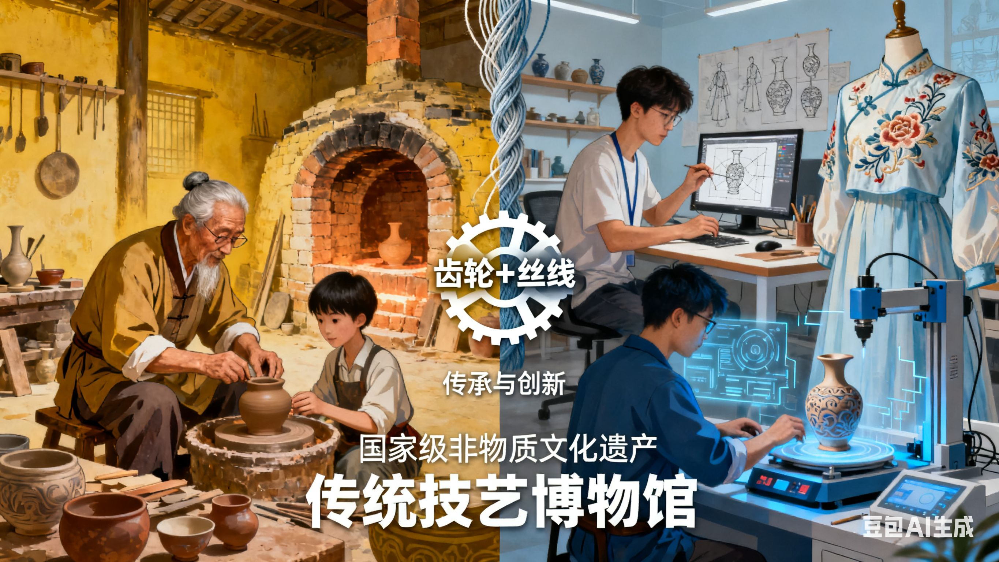营造技艺：构筑文明的空间智慧
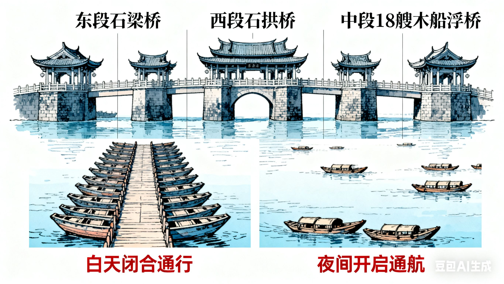中国传统营造技艺是古人在建筑、水利、桥梁等领域积累的技术与经验，以其独特的结构体系、精湛的工艺手法和与自然和谐共生的理念，在世界营造史上独树一帜。这些技艺不仅打造了无数宏伟壮丽的建筑奇观，更体现了中华民族 “天人合一” 的哲学思想。
中国传统木构建筑营造技艺
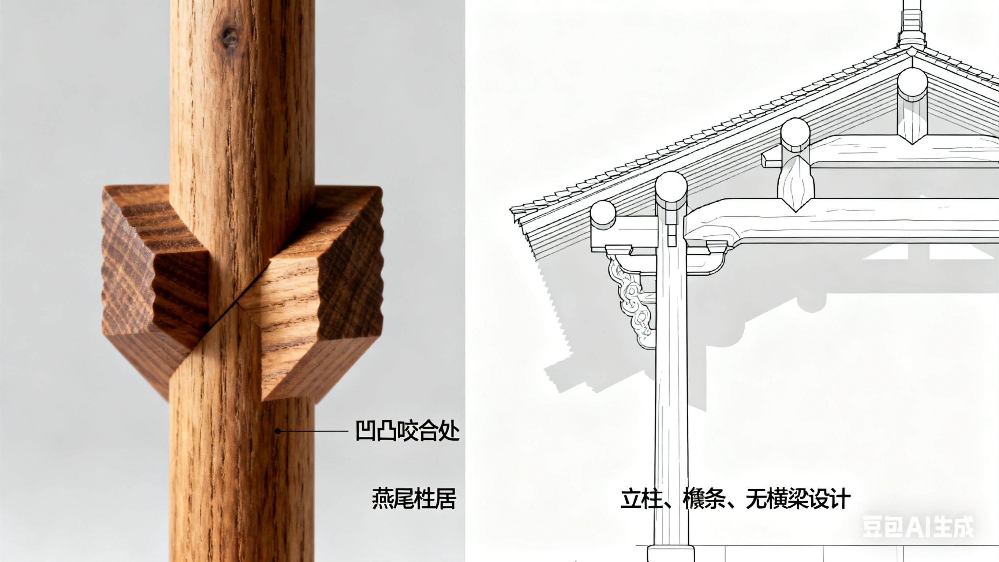中国传统建筑以木结构为核心，从选材、加工到组装，形成了一套完整且精湛的营造技艺，其中以 “榫卯结构” 和 “斗拱体系” 最为人称道，无需一钉一铆，便能让建筑屹立千年。
榫卯结构：这是传统木结构建筑的灵魂，通过构件之间凹凸部分的咬合，实现连接与固定。不同的榫卯结构适用于不同的建筑部位，如 “燕尾榫” 常用于家具与木构的拼接，因其形状如燕尾，咬合紧密，不易脱落；“穿斗榫” 则多用于民居的梁架，以柱子直接承檩，减少横梁使用，增强建筑的稳定性。北京故宫的太和殿，其梁架、门窗、桌椅等均采用榫卯结构，历经数百年风雨，依然坚固如初，充分展现了榫卯技艺的高超。
斗拱体系：斗拱是中国传统建筑特有的构件，由 “斗” 和 “拱” 组成，位于立柱与横梁之间，兼具承重与装饰功能。斗拱层层叠加，不仅能将屋顶的重量均匀传递至立柱，还能通过不同的组合方式，形成丰富的建筑造型。山西应县木塔（佛宫寺释迦塔）是运用斗拱技艺的典范，全塔共使用 54 种不同形制的斗拱，总计 480 朵，这些斗拱如同建筑的 “关节”，让木塔在经历多次地震后仍安然无恙，被誉为 “世界三大奇塔” 之一。
代表案例 —— 北京故宫营造技艺：故宫的建造融合了选址、规划、设计、施工等一系列复杂技艺。在选址上，遵循 “背山面水” 的原则，依托景山，紧邻金水河，既保证了风水和谐，又便于取水防火；在规划上，以中轴线为中心，对称布局，外朝与内廷分区明确，体现了古代皇权的等级秩序；在施工中，木材选用东北的红松，经过 “蒸煮、干燥、防虫” 等多道工序处理，确保木材经久耐用；屋顶的琉璃瓦采用 “失蜡法” 烧制，色彩以黄、绿为主，黄色象征皇权，绿色用于皇子居所，色彩搭配严谨有序。故宫营造技艺不仅是建筑技术的集大成者，更蕴含着深厚的文化内涵，2009 年被列入联合国教科文组织《人类非物质文化遗产代表作名录》。
传统桥梁营造技艺
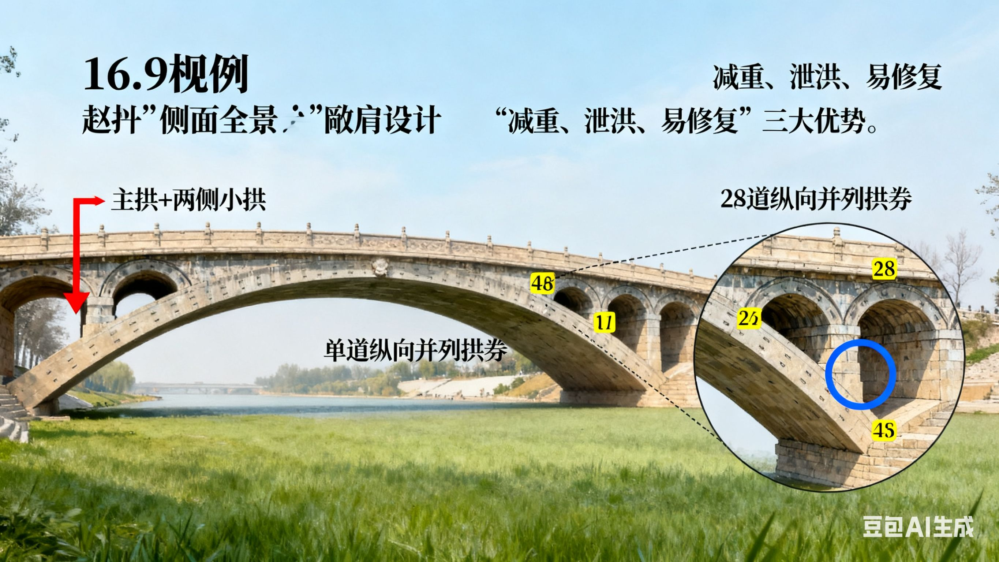中国传统桥梁种类繁多，包括石拱桥、木桥、浮桥等，其中以石拱桥的营造技艺最为精湛，展现了古人在力学、材料学上的卓越智慧。
赵州桥营造技艺：赵州桥（安济桥）由隋代工匠李春设计建造，是世界上现存年代最久远、保存最完整的单孔敞肩石拱桥。其核心技艺在于 “敞肩拱” 设计，即在主拱两侧各设两个小拱，既减轻了桥身重量，节省了石料，又能在洪水来临时增加泄洪量，减少洪水对桥身的冲击。赵州桥的拱券采用 “纵向并列砌筑法”，将 28 道拱券石纵向排列，每道拱券独立受力，若某一道拱券损坏，只需更换该道，无需整体重建，这种设计极大地提高了桥梁的耐久性与可修复性。历经 1400 多年，赵州桥依然承载着交通功能，其营造技艺对后世桥梁建设影响深远。
潮州广济桥营造技艺：广济桥（湘子桥）位于广东潮州，是中国古代第一座启闭式浮桥，其营造技艺融合了梁桥、浮桥、拱桥的特点。桥梁东段为石梁桥，西段为石拱桥，中间以 18 艘木船连接，形成浮桥部分，白天船只相连供人通行，夜间开启船只，便于船只通航。这种 “梁桥 + 浮桥” 的组合设计，既解决了韩江宽阔江面的通行问题，又兼顾了航运需求，体现了古人因地制宜的营造智慧。
手工制作技艺：指尖雕琢的艺术之美
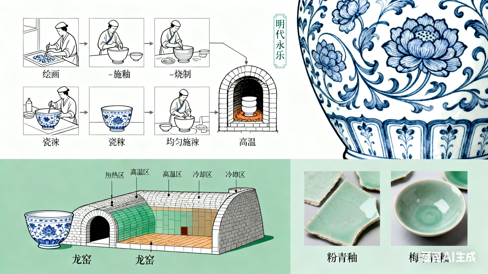传统手工制作技艺涵盖陶瓷、纺织、金属、雕刻等多个领域，匠人们以双手为工具，以耐心为燃料，将普通的材料转化为精美的艺术品，每一件作品都凝聚着独特的匠心与情感。
陶瓷制作技艺
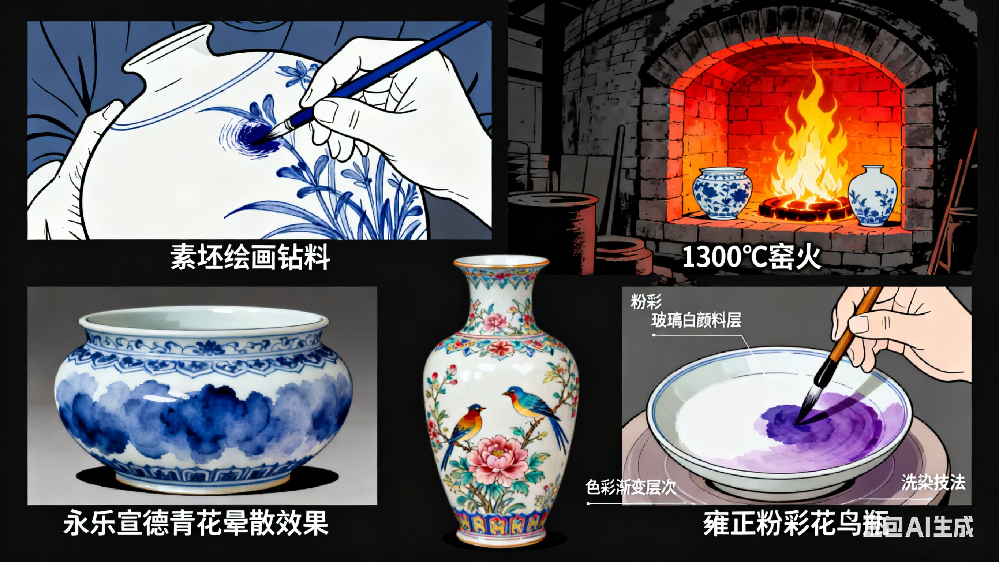中国是 “陶瓷的故乡”，陶瓷制作技艺历经数千年发展，形成了从原料选取、成型、装饰到烧制的完整体系，不同窑口的技艺各具特色，成就了无数陶瓷珍品。
景德镇制瓷技艺：景德镇被誉为 “瓷都”，其制瓷技艺集各地之大成，尤以 “青花瓷”“粉彩瓷”“玲珑瓷”“颜色釉瓷” 四大名瓷最为著名。青花瓷的制作需经过 “选料、制坯、绘画、施釉、烧制” 五大工序，其中 “绘画” 是核心，工匠以含钴的颜料在素坯上绘制图案，再施透明釉，经 1300℃高温烧制后，钴料呈现出幽蓝的色泽，图案清晰明快。明代永乐、宣德时期的青花瓷，采用 “苏麻离青” 颜料，发色浓艳，带有自然的晕散效果，被誉为 “青花之王”。粉彩瓷则在青花瓷的基础上，加入 “玻璃白” 颜料，通过 “洗染” 技法，使色彩层次丰富，画面立体感强，清代雍正时期的粉彩瓷，色彩柔和淡雅，题材多为花鸟、人物，尽显精致典雅。
龙泉青瓷制作技艺：龙泉青瓷产自浙江龙泉，以 “青如玉、明如镜、声如磬” 的特点闻名于世。其核心技艺在于 “釉料配方” 与 “烧制工艺”，釉料以氧化铁为着色剂，通过控制釉料中氧化铁的含量和烧制温度，形成不同的青色釉色，如 “粉青釉”“梅子青釉”。粉青釉色泽淡雅，如同淡青色的玉石；梅子青釉色泽浓艳，如同成熟的梅子，莹润剔透。龙泉青瓷的烧制采用 “龙窑”，龙窑依山而建，长达数十米，通过控制窑内的温度与气氛，使釉料充分熔融，形成均匀的釉面。宋代是龙泉青瓷的鼎盛时期，其产品远销海外，成为中国陶瓷文化的重要象征，2009 年龙泉青瓷传统烧制技艺被列入联合国教科文组织《人类非物质文化遗产代表作名录》。
传统纺织与刺绣技艺
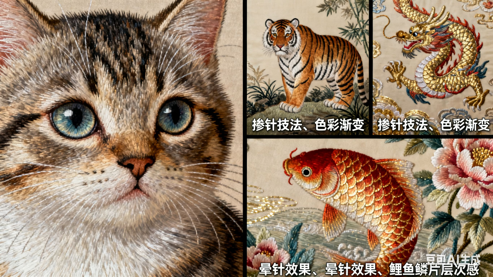中国传统纺织与刺绣技艺历史悠久，从丝绸的织造到精美的刺绣，每一项技艺都展现了古人对美的追求，其中丝绸织造技艺与四大名绣最为著名。
丝绸织造技艺 —— 云锦：云锦产自江苏南京，是中国传统丝织工艺中最高级的品种，因 “其价如金，其纹如云” 而得名。云锦的织造技艺极为复杂，采用 “通经断纬” 的手法，需要两位工匠配合操作，一位在机上 “提花”，一位在机下 “织造”，一天最多只能织造 5-6 厘米，故有 “寸锦寸金” 之说。云锦的图案题材丰富，多为龙、凤、花卉、吉祥纹样，色彩鲜艳华丽，常用金线、银线点缀，尽显皇家气派。明清时期，云锦专为皇室织造龙袍、冕服等服饰，如今，云锦不仅用于服饰制作，还被制成工艺品，成为中国丝绸文化的代表。
四大名绣技艺：苏绣、湘绣、粤绣、蜀绣被誉为 “中国四大名绣”，每一种刺绣都有其独特的针法与风格。苏绣以 “精细、雅洁” 著称，针法多达 40 余种，如 “虚实针”“乱针绣”，善于表现花鸟、人物的细腻质感，苏绣作品《猫》，通过精细的针法，将猫的毛发、眼神刻画得栩栩如生，仿佛活猫跃然于丝绸之上；湘绣以 “豪放、大气” 为特色，擅长运用 “掺针”“毛针” 等针法表现走兽，湘绣作品《虎》，通过色彩的渐变与针法的叠加，将老虎的威猛气势展现得淋漓尽致；粤绣以 “构图饱满、色彩浓艳” 闻名，多采用 “金银线绣”，题材以龙凤、花鸟为主，具有浓郁的岭南文化特色；蜀绣以 “细腻、灵动” 见长，针法丰富，擅长表现花鸟、虫鱼，蜀绣作品《芙蓉鲤鱼》，通过 “晕针” 技法，将芙蓉花的娇艳与鲤鱼的灵动完美呈现。
金属锻造与雕刻技艺
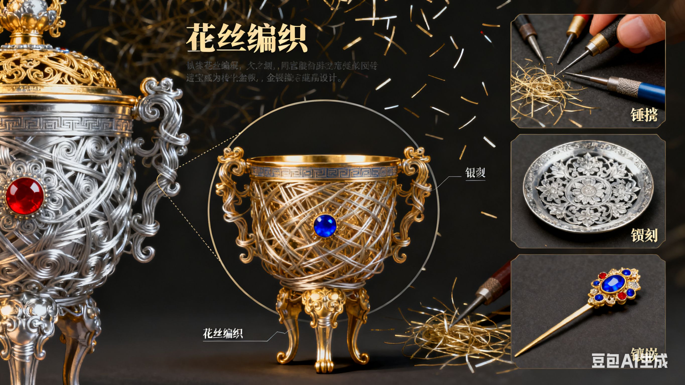传统金属技艺以金、银、铜、铁等为原料，通过锻造、铸造、雕刻等手法，制作出兵器、器物、饰品等，其中青铜器铸造技艺与金银细工技艺最为精湛。
青铜器铸造技艺 —— 失蜡法：失蜡法是中国古代铸造青铜器的核心技艺，流程包括 “制模、制蜡型、涂泥、烧制、浇注、脱范”。首先以黏土制作器物模型，然后在模型表面涂抹蜂蜡，雕刻出精细的花纹，形成蜡型；接着在蜡型外涂抹多层黏土，形成泥范；将泥范放入窑中烧制，蜡型融化流出，形成空腔；最后将熔化的青铜液浇注到空腔中，冷却后打破泥范，便可得到青铜器。商代的 “四羊方尊” 是采用失蜡法铸造的典范，尊的腹部装饰有四只羊头，羊头与尊身浑然一体，花纹精细繁复，没有任何拼接痕迹，展现了商代工匠高超的铸造技艺。
金银细工技艺：金银细工以金、银为原料，通过 “锤揲、錾刻、花丝、镶嵌” 等手法，制作出精美的饰品与器物。锤揲技艺是将金银片放在模具上，用锤子反复敲打，使金银片呈现出所需的造型；錾刻技艺是用錾刀在金银器表面雕刻花纹，线条细腻流畅；花丝技艺是将金银拉成细丝，编织成各种图案，再焊接成型，北京的 “花丝镶嵌” 技艺最为著名，其作品《金瓯永固杯》，杯身以花丝编织而成，镶嵌有珍珠、宝石，造型精美，工艺复杂，是清代皇室的御用器物，被誉为 “金银细工的巅峰之作”。
表演技艺：舞台与民间的艺术传承
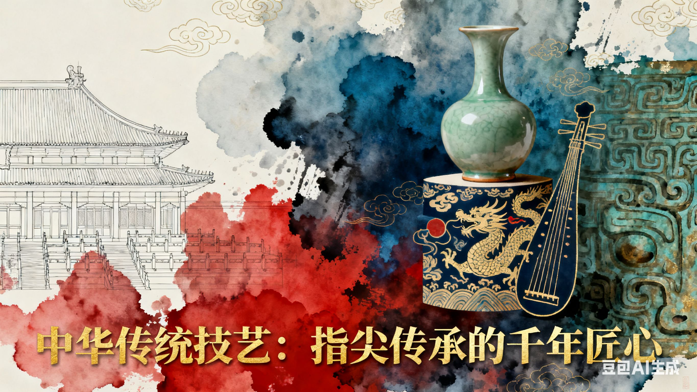传统表演技艺涵盖戏曲伴奏乐器制作、传统乐器演奏、民间杂技等领域，它们不仅是表演的辅助手段，更是独立的艺术形式，展现了古人在音乐、杂技等方面的艺术才华。
传统乐器制作技艺
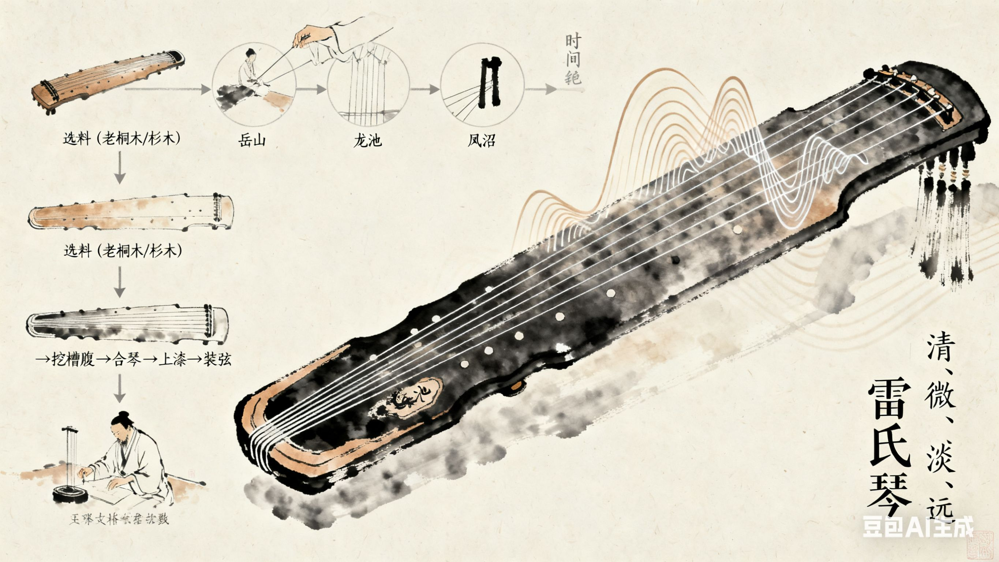中国传统乐器种类繁多，如古琴、琵琶、二胡、笛子等，每种乐器的制作都有其独特的技艺，从选材到成型，每一个环节都精益求精。
古琴制作技艺：古琴是中国最古老的弹拨乐器之一，被誉为 “琴棋书画” 四艺之首，其制作技艺极为复杂，需经过 “选料、制坯、挖槽腹、合琴、上漆、安岳山、装琴弦” 等数十道工序。选料是关键，琴身多选用老桐木或杉木，桐木音色明亮，杉木音色浑厚，且需选取生长在向阳山坡、无虫蛀的木材；挖槽腹是决定古琴音色的核心环节，工匠需根据木材的纹理与密度，控制槽腹的深度与形状，使古琴产生 “清、微、淡、远” 的音色；上漆采用天然大漆，需反复涂抹数十层，每涂一层需干燥数天，最后再用细砂纸打磨，使琴身表面光滑如玉。唐代的 “雷氏琴” 是古琴制作的典范，其音色浑厚悠扬，被誉为 “天下第一琴”，如今，古琴制作技艺已被列入国家级非物质文化遗产名录，得到了重点保护与传承。
琵琶制作技艺：琵琶是中国传统弹拨乐器，其制作技艺注重 “选材、共鸣箱制作、相品安装、琴弦装配”。共鸣箱多选用桑木或红木，桑木音色柔和，红木音色明亮；共鸣箱的形状为 “梨形”，这种形状能增强声音的共鸣效果；相品（琴上的品格）采用竹制或骨制，需根据音律精准安装，确保音准。苏州的琵琶制作技艺最为著名，其制作的琵琶，音色清脆明亮，手感舒适，深受演奏家喜爱。
传统杂技技艺
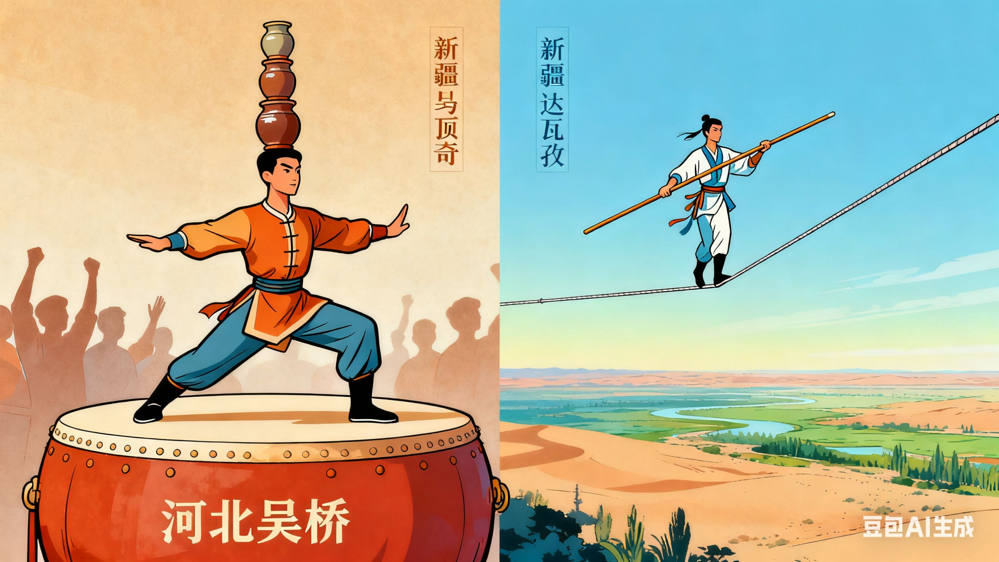中国传统杂技历史悠久，起源于先秦时期的 “百戏”，经过长期发展，形成了 “顶技、走钢丝、杂技魔术、驯兽” 等多个门类，以 “险、奇、巧” 为特点，展现了演员高超的身体控制力与技巧。
顶技技艺：顶技是杂技中的经典节目，演员通过头部、肩部、手部等部位，顶起各种物品，如坛子、桌子、梯子等，要求演员保持身体平衡，动作稳定。河北吴桥是中国杂技之乡，吴桥顶技以 “顶坛子” 最为著名，演员头顶数十个坛子，在舞台上行走、转身、跳跃，坛子始终保持平衡，毫无掉落，其精湛的技艺令人叹为观止。
走钢丝技艺：走钢丝又称 “走索”，演员在高悬的钢丝上行走，有的还会做出跳跃、旋转、倒立等难度动作。传统走钢丝多采用麻绳或铁丝，演员通过手持长杆保持平衡，杆的长度与重量需根据演员的身高与技巧精准控制。新疆的 “达瓦孜” 是走钢丝技艺的代表，演员在没有任何安全保护措施的情况下，在高空钢丝上行走，甚至还能表演骑单车、蒙眼行走等绝活，展现了极强的勇气与技巧，2006 年达瓦孜被列入国家级非物质文化遗产名录。
传统技艺的传承与价值

中华传统技艺不仅是古代技术的结晶，更是民族文化的载体，具有重要的历史价值、艺术价值与文化价值。在历史价值方面，传统技艺记录了古人的生产生活方式与技术发展历程，是研究中国古代社会的重要实物资料；在艺术价值方面，传统技艺制作的作品，无论是建筑、陶瓷还是刺绣，都具有极高的艺术审美价值，是中国艺术宝库中的重要组成部分；在文化价值方面，传统技艺承载着民族的精神追求与文化记忆，是中华民族凝聚力与向心力的重要源泉。 如今，随着现代化进程的加快，许多传统技艺面临着传承断代的困境。为保护与传承传统技艺，国家出台了一系列政策，设立国家级非物质文化遗产名录，扶持传统技艺传承人，建立传统技艺博物馆与传习基地。同时，越来越多的年轻人开始关注传统技艺，通过学习、创新，让传统技艺与现代生活相结合，如将传统刺绣融入服装设计，将传统陶瓷技艺用于现代饰品制作，使传统技艺在新时代焕发出新的活力。 中华传统技艺是中华民族的宝贵财富，它不仅属于过去，更属于未来。每一项传统技艺的传承，都是对民族文化的守护；每一次传统技艺的创新，都是对民族精神的延续。相信在全社会的共同努力下，这些指尖上的千年匠心，必将在新时代继续绽放光彩，为中华文明的传承与发展注入新的动力。